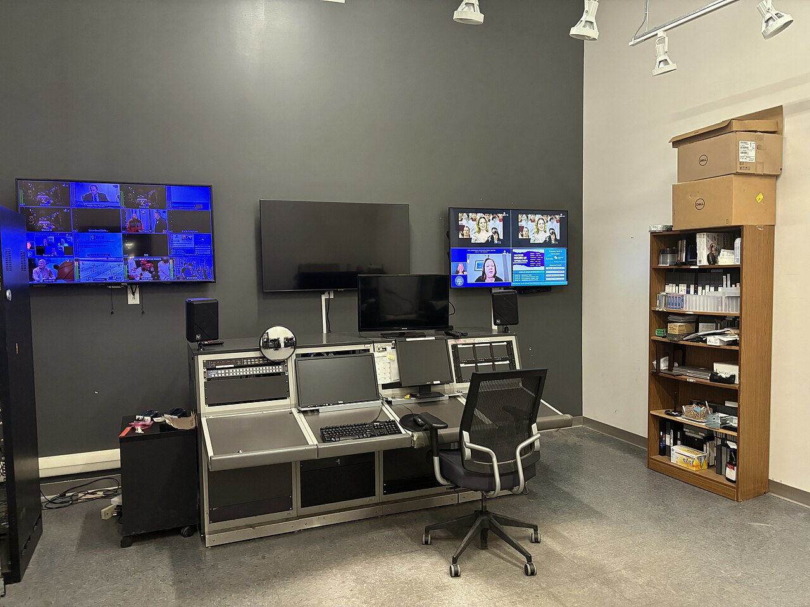
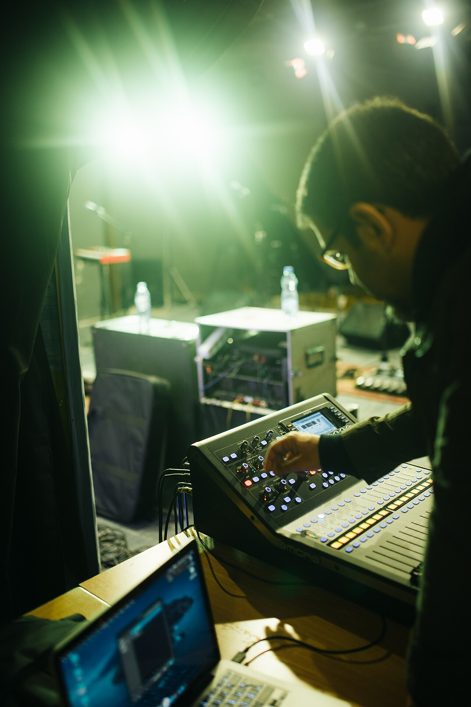

The Equipment That Powers a Live Show
A modern concert relies on an enormous amount of specialized technology that must all work together in real time. Broadcast-quality cameras capture the performance and send their signals over fiber optic cable to a video control area, often hidden under the stage or in a truck outside the venue. A video switcher allows the technical director to cut instantly between cameras, pre-recorded content, and live graphics without any visible glitch. Massive LED video walls, sometimes covering the entire back of the stage, display those images brightly enough to be seen from the cheapest seats. Digital audio consoles process dozens or even hundreds of channels, applying equalization, compression, and effects to every microphone on stage. Intelligent lighting fixtures pan, tilt, zoom, and change color on command from a lighting console running thousands of pre-programmed cues. All of this equipment travels from city to city in semi trucks and must be assembled, tested, and torn down again within a single day.

Inside the Major Systems
Video Switchers and Production Control
The video switcher is the heart of the visual production, because every image the audience sees on the screens passes through it. Professional switchers from companies such as Ross, Grass Valley, and Blackmagic Design can handle dozens of inputs and multiple independent outputs at the same time. The technical director uses the switcher to perform cuts, dissolves, and layered effects exactly when the video director calls for them. A multiviewer display shows every camera feed at once on a wall of monitors, so the director can see which shots are available at any moment. Media servers feed the switcher with pre-rendered video content that is often synchronized to the music through timecode. Engineers also monitor signal quality constantly, because a single failed cable can take a camera off the screens in front of twenty thousand people. Redundant signal paths and backup equipment are standard practice on large tours for exactly that reason.
Audio Consoles and Lighting Systems
Digital mixing consoles from manufacturers such as DiGiCo, Avid, and Yamaha have replaced the giant analog boards of earlier decades. A single modern console can process more than one hundred input channels while storing a complete snapshot of every setting for each song in the set list. Line array speaker systems are flown from the ceiling in precise curved columns, and prediction software calculates exactly how the sound will cover every seat in the venue. On the lighting side, moving-head fixtures contain motors, color-mixing systems, and zoom optics controlled over a network protocol called DMX. Lighting consoles such as the grandMA series allow a programmer to build complex cues that fire in perfect time with the performance. Many shows now synchronize lighting, video, and even pyrotechnics to a shared timecode so every element lands on the same beat. The result is a show where technology and artistry are impossible to separate.

Core Technology Used at Live Events
- Broadcast cameras with long zoom lenses and fiber optic transmission
- Video switchers for live cutting between camera feeds and graphics
- LED video walls that display live camera shots and creative content
- Digital audio mixing consoles with snapshot recall for every song
- Line array speaker systems designed to cover the entire venue evenly
- Intelligent lighting fixtures and consoles running timecoded cues
Explore live production technology in depth at Live Design and read equipment coverage at TV Technology.